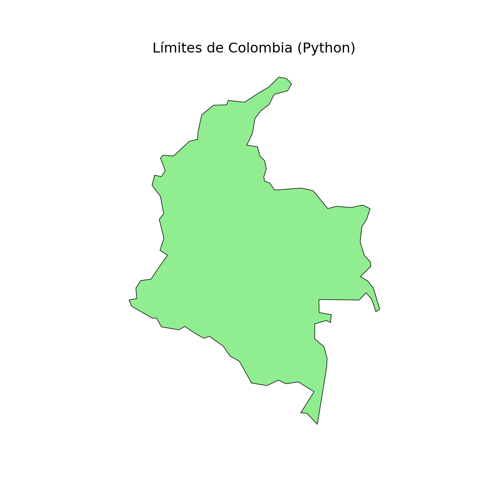
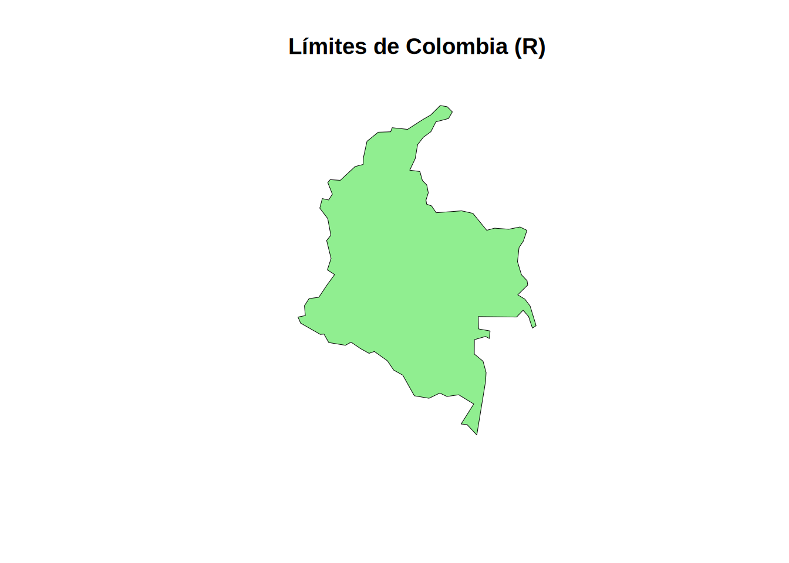
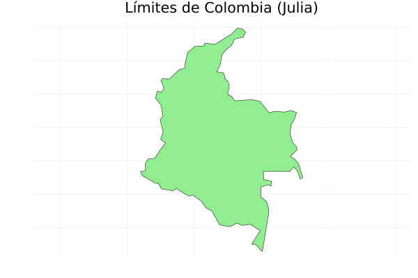

Código
# #| include: false
source("./docs/j_eval_j_plot.r")# #| include: false
source("./docs/j_eval_j_plot.r")En el mundo real de la geomática, no todos los datos espaciales llegan a nuestras manos en formatos geográficos perfectamente estructurados como Shapefiles (.shp) o GeoPackages (.gpkg). Con muchísima frecuencia, los analistas espaciales deben lidiar con datos “crudos”: coordenadas GPS capturadas en libretas de campo electrónicas y guardadas en archivos de texto plano, bases de datos socioeconómicas del DANE en formato CSV, o registros de estaciones meteorológicas del IDEAM que contienen valores nulos o errores de tipeo.
Antes de poder visualizar un mapa o ejecutar una herramienta de geoprocesamiento espacial usando librerías avanzadas como geopandas o sf, es fundamental saber cómo comunicarnos con el sistema operativo para abrir, leer, limpiar y guardar estos archivos desde cero.
Además, dado que los datos del mundo real son “sucios” por naturaleza, un buen algoritmo de procesamiento masivo no debe colapsar ni detenerse por completo al encontrar una letra donde debería ir un número. Aquí es donde entra en juego el manejo de excepciones, una habilidad de programación vital para construir herramientas robustas, automatizadas y a prueba de fallos.
Al finalizar esta sección, el estudiante será capaz de:
try...except, tryCatch) que capturen errores específicos (como archivos no encontrados o formatos de datos inválidos) sin interrumpir el flujo del programa.En programación, es un error técnico grave usar rutas absolutas (por ejemplo, C:\Usuarios\Maestria\SIG\data\COL.geo.json). Si compartes tu código con otro investigador o ejecutas el script en un servidor Linux, la estructura de carpetas no existirá y el programa fallará inmediatamente.
La solución estándar es usar rutas relativas en combinación con los constructores de rutas nativos de cada lenguaje. Esto garantiza que tu script encuentre los datos basándose en el directorio de trabajo actual y que los separadores de carpetas (/ en Mac/Linux, \ en Windows) se asignen dinámicamente según el sistema operativo.
Para navegar de forma relativa, los sistemas informáticos utilizan dos comodines estándar:
. (un punto): Representa el directorio actual (la carpeta donde se está ejecutando el script o notebook)... (dos puntos): Representa el directorio superior (la carpeta “padre”). Se utiliza para retroceder niveles en el árbol de archivos.Por ejemplo, si tu script está dentro de una subcarpeta llamada scripts/ y quieres acceder a los datos que están en una carpeta paralela, usarías .. para salir de scripts/ y luego entrarías a la ruta deseada (ej. ../data/mi_archivo.csv).
A continuación, asumiremos que nuestro entorno de ejecución está en la raíz del proyecto y necesitamos abrir un límite nacional ubicado exactamente en la ruta relativa: data/vector/geojson/COL.geo.json.
El código demuestra cómo ensamblar esta ruta independientemente del sistema operativo, abrir el dato espacial y generar un gráfico estático.
# #| eval: false
import geopandas as gpd
import matplotlib.pyplot as plt
from pathlib import Path
# 1. Construcción segura de la ruta relativa
# Path(".") hace referencia al directorio actual.
# El operador '/' es sobrecargado por pathlib para unir carpetas correctamente.
ruta_archivo = Path(".") / "data" / "vector" / "geojson" / "COL.geo.json"
# Blindaje con try-except para evitar colapso en Quarto
try:
# 2. Leer el archivo espacial
colombia_gdf = gpd.read_file(ruta_archivo)
# 3. Graficar el mapa estático
fig, ax = plt.subplots(figsize=(6, 6))
colombia_gdf.plot(ax=ax, color="lightgreen", edgecolor="black", linewidth=0.5)
ax.set_title("Límites de Colombia (Python)")
ax.set_axis_off() # Ocultamos los ejes para una visualización más cartográfica
plt.show()
except Exception as e:
# 4. Mensaje controlado en consola si falla la ruta
print(f"No se pudo generar el mapa. Verifica la ruta: {ruta_archivo}")
# #| eval: false
library(sf)Linking to GEOS 3.12.1, GDAL 3.8.4, PROJ 9.4.0; sf_use_s2() is TRUE# 1. Construcción segura de la ruta relativa
# file.path se encarga de usar el separador adecuado del sistema operativo
ruta_archivo <- file.path(".", "data", "vector", "geojson", "COL.geo.json")
# Blindaje comprobando si el archivo existe
if (file.exists(ruta_archivo)) {
# 2. Leer el archivo espacial
# quiet = TRUE evita que se imprima la metadata en la consola durante la lectura
colombia_sf <- st_read(ruta_archivo, quiet = TRUE)
# 3. Graficar el mapa estático
# st_geometry extrae solo el contorno espacial para un renderizado rápido
plot(st_geometry(colombia_sf),
col = "lightgreen",
border = "black",
lwd = 0.5,
main = "Límites de Colombia (R)")
} else {
# 4. Control de error
cat(sprintf("No se pudo generar el mapa. Verifica la ruta: %s\n", ruta_archivo))
}
Starting Julia ...julia> using GeoDataFrames
julia> using Plots
julia> # 1. Definición de rutas relativas con joinpath (robusto para SO)
julia> # j_eval asume el directorio de trabajo del .qmd
julia> f_entrada = joinpath(".", "data", "vector", "geojson", "COL.geo.json")
"./data/vector/geojson/COL.geo.json"
julia> f_salida = joinpath(".", "images", "plots", "mapa_colombia_julia.png")
"./images/plots/mapa_colombia_julia.png"
julia> # Garantizar la existencia del directorio images/plots para guardar la imagen
julia> output_dir = dirname(f_salida)
"./images/plots"
julia> if !isdir(output_dir) mkpath(output_dir) end
julia> # Blindaje general para proteger la ejecución en Quarto
julia> try if isfile(f_entrada) # 2. Leer GeoJSON colombia_gdf = GeoDataFrames.read(f_entrada) # 3. Generar gráfico en variable 'p' asegurando la relación de aspecto cartográfica p = plot(colombia_gdf.geometry, fillcolor = :lightgreen, linecolor = :black, linewidth = 0.5, title = "Límites de Colombia (Julia)", legend = false, axis = false, aspect_ratio = :equal) # GUARDAR FÍSICAMENTE la imagen en disco savefig(p, f_salida) else # 4. Si no hay archivo, guardar imagen con mensaje de error claro p_error = plot(title = "❌ Archivo no encontrado:\n$f_entrada", legend=false, axis=false, grid=false) savefig(p_error, f_salida) end catch e # Capturar fallo crítico y guardar mensaje en imagen p_crash = plot(title = "❌ Fallo crítico detectado:\n$(typeof(e))", titlefontsize=10, legend=false, axis=false, grid=false) savefig(p_crash, f_salida) end
"/home/rstudio/work/01_prog_sig/images/plots/mapa_colombia_julia.png"

En este ejercicio, vamos a crear un archivo de texto plano (./data/coordenadas_colombia_p.txt) que contendrá las coordenadas (Latitud, Longitud) de cinco de las principales ciudades de Colombia: Bogotá, Medellín, Cali, Barranquilla y Cartagena. Esto nos servirá como base para leer datos tabulares más adelante.
# #| eval: false
# 1. Definimos los datos usando un string de múltiples líneas (triple comilla).
# Orden: Latitud, Longitud (Bogotá, Medellín, Cali, Barranquilla, Cartagena)
datos_muestra = """4.7110,-74.0721
6.2442,-75.5812
3.4516,-76.5320
10.9685,-74.7813
10.3910,-75.4794"""
# 2. Definimos la variable 'f_txt' que almacena la ruta y nombre del archivo
f_txt = "./data/coordenadas_colombia_p.txt"
# 3. Manejo de excepciones completo para la creación del archivo
try:
# 'w' indica modo escritura (write). 'with' cierra el archivo automáticamente.
# Asignamos el archivo abierto a la variable 'con' (conexión)
with open(f_txt, "w", encoding="utf-8") as con:
# Escribimos los datos en la conexión.
# Python retorna la cantidad de caracteres escritos.
caracteres_escritos = con.write(datos_muestra)
#
# Imprime automáticamente caracteres_escritos en modo interactivo
#con.write(datos_muestra)
#
# Evita que se imprima el número de caracteres_escritos usando '_'
#_ = con.write(datos_muestra)
except Exception as e:
# Bloque que se ejecuta solo si ocurre un error en la apertura/escritura
print(f"Ocurrió un error al crear el archivo: {e}")
else:
# Bloque que se ejecuta solo si el 'try' fue exitoso (sin errores)
print(f"El archivo '{f_txt}' ha sido creado exitosamente. Se guardaron {caracteres_escritos} caracteres.")
finally:
# Bloque que se ejecuta SIEMPRE, haya ocurrido un error o no, ideal para limpieza
print("Done.")El archivo './data/coordenadas_colombia_p.txt' ha sido creado exitosamente. Se guardaron 81 caracteres.
Done.Las alternativas a except Exception as e: son específicas al tipo de error esperado. Mayor información acá. Por ejemplo:
except ValueError:except LookupError:except IOError:except FileNotFoundError:except TimeoutError:except ZeroDivisionError:except KeyError:# #| eval: false
# 1. En R, usamos el salto de línea '\n' para simular múltiples líneas
datos_muestra <- "4.7110,-74.0721\n6.2442,-75.5812\n3.4516,-76.5320\n10.9685,-74.7813\n10.3910,-75.4794"
# 2. Definimos la variable 'f_txt' para la ruta del archivo
f_txt <- "./data/coordenadas_colombia_r.txt"
# 3. tryCatch nos permite manejar errores e incluir un bloque 'finally'
tryCatch({
# Bloque de ejecución principal
# Método directo: R abre y cierra la conexión automáticamente
writeLines(datos_muestra, f_txt)
#
# Alternativamente, abrimos la conexión al archivo explícitamente en la variable 'con'
#con <- file(f_txt, "w")
# Escribimos los datos usando esa conexión explícita
# writeLines(datos_muestra, con)
# Es fundamental cerrar la conexión manualmente al terminar si usamos file()
#close(con)
# En R no hay un 'else' explícito en tryCatch, por lo que el mensaje
# de éxito se pone al final del bloque principal (solo llega aquí si no hay error)
cat(sprintf("El archivo '%s' ha sido creado exitosamente.\n", f_txt))
}, error = function(e) {
# Bloque que se ejecuta si ocurre un error (ej. disco lleno o sin permisos)
cat(sprintf("Ocurrió un error al crear el archivo: %s\n", e$message))
}, finally = {
# Bloque que se ejecuta SIEMPRE para finalizar el proceso
cat("Done.\n")
})El archivo './data/coordenadas_colombia_r.txt' ha sido creado exitosamente.
Done.# #| eval: false
j_eval(r"-(
# 1. Julia también permite strings de múltiples líneas con triple comilla
datos_muestra = """
4.7110,-74.0721
6.2442,-75.5812
3.4516,-76.5320
10.9685,-74.7813
10.3910,-75.4794"""
# 2. Definimos la variable 'f_txt' que contiene la ruta al archivo
f_txt = "./data/coordenadas_colombia_j.txt"
# 3. Bloque try-catch-finally para manejar la escritura
try
# open con el bloque 'do' asigna la conexión a 'con' y la cierra automáticamente al terminar
open(f_txt, "w") do con
# Escribimos los datos en la conexión. strip() quita saltos de línea extra al inicio/fin
write(con, strip(datos_muestra))
end
# Julia no tiene 'else' para el try, el éxito se asume si llegamos a esta línea sin saltar al catch
println("El archivo '$f_txt' ha sido creado exitosamente.")
catch e
# Bloque que se ejecuta si ocurre un error durante la apertura o escritura
println("Ocurrió un error al crear el archivo: ", e)
finally
# Bloque que se ejecuta SIEMPRE, útil para garantizar la liberación de recursos
println("Done.")
end
)-")julia> # 1. Julia también permite strings de múltiples líneas con triple comilla
julia> datos_muestra = """ 4.7110,-74.0721 6.2442,-75.5812 3.4516,-76.5320 10.9685,-74.7813 10.3910,-75.4794"""
"4.7110,-74.0721\n6.2442,-75.5812\n3.4516,-76.5320\n10.9685,-74.7813\n10.3910,-75.4794"
julia> # 2. Definimos la variable 'f_txt' que contiene la ruta al archivo
julia> f_txt = "./data/coordenadas_colombia_j.txt"
"./data/coordenadas_colombia_j.txt"
julia> # 3. Bloque try-catch-finally para manejar la escritura
julia> try # open con el bloque 'do' asigna la conexión a 'con' y la cierra automáticamente al terminar open(f_txt, "w") do con # Escribimos los datos en la conexión. strip() quita saltos de línea extra al inicio/fin write(con, strip(datos_muestra)) end # Julia no tiene 'else' para el try, el éxito se asume si llegamos a esta línea sin saltar al catch println("El archivo '$f_txt' ha sido creado exitosamente.") catch e # Bloque que se ejecuta si ocurre un error durante la apertura o escritura println("Ocurrió un error al crear el archivo: ", e) finally # Bloque que se ejecuta SIEMPRE, útil para garantizar la liberación de recursos println("Done.") end
El archivo './data/coordenadas_colombia_j.txt' ha sido creado exitosamente. Done.
La función strip(datos_muestra) en Julia sirve para eliminar cualquier espacio en blanco o salto de línea (\n) que esté al principio o al final de la cadena de texto.
Al definir nuestra variable con triple comilla y dar un “enter” para que el código se vea ordenado:
datos_muestra = """
4.7110,-74.0721
...Ese primer “enter” es interpretado por Julia como una línea vacía. Si no usamos strip(), el archivo se guardaría con un salto de línea inicial, lo cual podría generar errores (como datos nulos o NaN) al intentar leerlo posteriormente como una tabla. Al aplicar strip(), le indicamos a Julia que corte esa “basura” de los bordes, garantizando que el archivo comience exactamente con el primer dígito de la latitud.
Para facilitar el estudio y la asimilación de los tres lenguajes, aquí detallo las diferencias clave en las funciones que acabamos de usar:
| Característica / Tarea | Python 🐍 | R 🔵 | Julia 🟣 |
|---|---|---|---|
| Definir strings multilinea | """texto""" |
"\n" explícito en la cadena |
"""texto""" |
| Abrir/Crear archivo | open(f_txt, "w") as con |
con = file(f_txt, "w")o writeLines(datos, f_txt) |
open(f_txt, "w") do con |
| Escribir datos | con.write(datos) |
writeLines(datos, con)o writeLines(datos, f_txt) |
write(con, datos) |
| Manejo seguro de cierre | with open(f_txt, "w") as con: |
close(con)o Automático al terminar script |
open(f_txt, "w") do con...end |
| Manejo de Errores | try:...except Exception as e:... |
tryCatch({...}, error = function(e){...}) |
try...catch e...end |
| Ejecución de Éxito | Bloque else: |
Al final del bloque principal tryCatch |
Al final del bloque try |
| Cierre garantizado | Bloque finally: |
Argumento finally = {} |
Bloque finally |
Al trabajar con datos en Colombia (o en español en general), es común tener caracteres especiales como tildes (Bogotá, Medellín) o la letra ñ. Por defecto, Windows puede intentar leer estos archivos usando codificaciones antiguas. Para evitar que tu código colapse con un UnicodeDecodeError o que los textos se corrompan, siempre declara explícitamente encoding="utf-8" (en Python) o encoding="UTF-8" (en R) al abrir un archivo de texto. Julia maneja UTF-8 de forma nativa por defecto.
En este paso, vamos a leer el archivo de coordenadas que creamos en la sección anterior, procesaremos cada línea para separar la latitud de la longitud, y guardaremos los resultados en un nuevo archivo con un formato mucho más legible.
# #| eval: false
# 1. Definimos las variables para los archivos de entrada y salida
f_in = "./data/coordenadas_colombia_p.txt"
f_out = "./data/coordenadas_formato_p.txt"
try:
# 2. Abrimos el archivo de entrada en modo lectura ('r' de read)
with open(f_in, "r", encoding="utf-8") as con_in:
# readlines() lee todas las líneas y devuelve una lista.
# Cada elemento de la lista incluye el salto de línea (\n) al final.
coordenadas = con_in.readlines()
# 3. Abrimos el archivo de salida en modo escritura ('w' de write)
with open(f_out, "w", encoding="utf-8") as con_out:
# Recorremos cada línea de la lista que leímos
for linea in coordenadas:
# strip() elimina espacios en blanco y el salto de línea (\n) de los extremos.
# split(",") divide la cadena de texto en dos partes usando la coma como separador.
lat, lon = linea.strip().split(",")
# Escribimos el dato formateado en nuestro archivo de salida.
# Usamos \n para asegurar que cada coordenada quede en una línea nueva.
_ = con_out.write(f"Latitud: {lat}, Longitud: {lon}\n")
print(f"Las coordenadas han sido guardadas con nuevo formato en '{f_out}'.")
except FileNotFoundError:
# Este bloque específico atrapa el error si el archivo de entrada no existe
print(f"Error: El archivo '{f_in}' no fue encontrado.")
print("Asegúrate de haber ejecutado el chunk de Python anterior para crearlo.")
except Exception as e:
# Atrapa cualquier otro error inesperado
print(f"Ocurrió un error inesperado: {e}")Las coordenadas han sido guardadas con nuevo formato en './data/coordenadas_formato_p.txt'.# #| eval: false
# 1. Definimos las variables para los archivos de entrada y salida (usamos los de R)
f_in <- "./data/coordenadas_colombia_r.txt"
f_out <- "./data/coordenadas_formato_r.txt"
tryCatch({
# 2. Abrimos conexión de lectura y leemos las líneas
con_in <- file(f_in, "r", encoding="UTF-8")
coordenadas <- readLines(con_in, warn = FALSE)
close(con_in) # Cerramos la conexión de entrada
# 3. Abrimos conexión de escritura para el nuevo archivo
con_out <- file(f_out, "w", encoding="UTF-8")
# Iteramos sobre cada línea
for (linea in coordenadas) {
# trimws() quita espacios. strsplit() divide por la coma (devuelve una lista)
partes <- strsplit(trimws(linea), ",")[[1]]
lat <- partes[1]
lon <- partes[2]
# Formateamos el texto y lo escribimos en la conexión
# writeLines añade el salto de línea automáticamente en R
texto_formateado <- sprintf("Latitud: %s, Longitud: %s", lat, lon)
writeLines(texto_formateado, con_out)
}
close(con_out) # Cerramos la conexión de salida
cat(sprintf("Las coordenadas han sido guardadas con nuevo formato en '%s'.\n", f_out))
}, error = function(e) {
# Manejo de errores (por ejemplo, si el archivo no existe)
cat(sprintf("Error al procesar los archivos: %s\n", e$message))
cat("Asegúrate de haber ejecutado el chunk de R anterior para crear el archivo base.\n")
})Las coordenadas han sido guardadas con nuevo formato en './data/coordenadas_formato_r.txt'.# #| eval: false
j_eval(r"-(
# 1. Definimos los nombres de archivo (usando los de Julia)
f_in = "./data/coordenadas_colombia_j.txt"
f_out = "./data/coordenadas_formato_j.txt"
try
# 2. Leer los datos. open con 'do' cierra automáticamente la conexión
coordenadas = open(f_in, "r") do con_in
readlines(con_in) # Devuelve un arreglo (Array) con cada línea
end
# 3. Procesar y escribir. Abrimos el nuevo archivo
open(f_out, "w") do con_out
for linea in coordenadas
# strip() limpia la línea. split() separa por coma y permite asignación múltiple
lat, lon = split(strip(linea), ",")
# Escribimos el formato en la conexión (añadimos \n manualmente)
write(con_out, "Latitud: $lat, Longitud: $lon\n")
end
end
println("Las coordenadas han sido guardadas con nuevo formato en '$f_out'.")
catch e
# Capturamos el error (típicamente SystemError si no encuentra el archivo)
println("Error al procesar los archivos: ", e)
println("Asegúrate de haber ejecutado el chunk de Julia anterior para crear el archivo base.")
end
)-")julia> # 1. Definimos los nombres de archivo (usando los de Julia)
julia> f_in = "./data/coordenadas_colombia_j.txt"
"./data/coordenadas_colombia_j.txt"
julia> f_out = "./data/coordenadas_formato_j.txt"
"./data/coordenadas_formato_j.txt"
julia> try # 2. Leer los datos. open con 'do' cierra automáticamente la conexión coordenadas = open(f_in, "r") do con_in readlines(con_in) # Devuelve un arreglo (Array) con cada línea end # 3. Procesar y escribir. Abrimos el nuevo archivo open(f_out, "w") do con_out for linea in coordenadas # strip() limpia la línea. split() separa por coma y permite asignación múltiple lat, lon = split(strip(linea), ",") # Escribimos el formato en la conexión (añadimos \n manualmente) write(con_out, "Latitud: $lat, Longitud: $lon\n") end end println("Las coordenadas han sido guardadas con nuevo formato en '$f_out'.") catch e # Capturamos el error (típicamente SystemError si no encuentra el archivo) println("Error al procesar los archivos: ", e) println("Asegúrate de haber ejecutado el chunk de Julia anterior para crear el archivo base.") end
Las coordenadas han sido guardadas con nuevo formato en './data/coordenadas_formato_j.txt'.
A continuación, destacamos las diferencias en las funciones de manipulación y lectura de texto:
| Característica / Tarea | Python 🐍 | R 🔵 | Julia 🟣 |
|---|---|---|---|
| Abrir en modo lectura | open(f_in, "r") as con_in |
con_in = file(f_in, "r") |
open(f_in, "r") do con_in |
| Leer todas las líneas | con_in.readlines() |
readLines(con_in) |
readlines(con_in) |
| Limpiar espacios / saltos | linea.strip() |
trimws(linea) |
strip(linea) |
| Separar texto por coma | linea.split(",") |
strsplit(linea, ",")[[1]] |
split(linea, ",") |
| Formatear texto (variables) | f"Lat: {lat}" |
sprintf("Lat: %s", lat) |
"Lat: $lat" |
| Manejo Archivo no encontrado | except FileNotFoundError: |
Atrapado genéricamente por error = function(e) en el tryCatch |
Atrapado genéricamente en catch e (es un SystemError) |
A menudo, los datos espaciales que recibimos en formato de texto vienen con errores (filas incompletas, letras en lugar de números, etc.). En esta sección aprenderemos a crear una función robusta que capture esos errores usando bloques de excepciones, evitando que nuestro programa colapse al encontrar un dato mal formateado.
# #| eval: false
# Ejemplo de manejo de excepciones al analizar coordenadas
def analizar_coordenadas(linea):
"""
Analiza una línea de texto y la convierte en coordenadas de latitud y longitud.
Argumentos:
linea (str): Una cadena de texto con las coordenadas en formato "lat,lon"
Retorna:
tuple: (latitud, longitud) como flotantes (floats), o None si el análisis falla
"""
try:
# split() divide la cadena y retorna una lista (list) de textos (str).
# Desempacamos esa lista directamente en dos variables de texto: lat_str y lon_str
lat_str, lon_str = linea.strip().split(",")
# Convertimos las variables de texto (str) a números decimales (float)
# Esto puede generar un ValueError si el texto no es un número válido
lat = float(lat_str)
lon = float(lon_str)
# Retornamos los valores empaquetados en una tupla (tuple) de floats
return lat, lon
except ValueError as e:
# Este bloque se ejecuta si no se puede convertir a float o si split() no devuelve 2 valores
print(f"Error de formato: {e}. No se pudo procesar la línea (tipo str): '{linea.strip()}'")
# Retornamos un tipo nulo (NoneType)
return None
except Exception as e:
# Este bloque captura cualquier otro error inesperado
print(f"Ocurrió un error inesperado: {e}")
return None
# Almacenaremos todos los casos de prueba en una lista (list) de textos (str) llamada lineas_prueba
lineas_prueba = [
"4.7110,-74.0721", # Coordenadas válidas (Bogotá)
"datos invalidos", # Formato inválido (sin coma)
"10.9685,-74.7813", # Coordenadas válidas (Barranquilla)
"10.9685,no_es_numero", # Longitud inválida (no se puede convertir a float)
"solo_un_valor", # Falta la coma (split falla al desempacar)
]
print("Probando el análisis de coordenadas:")Probando el análisis de coordenadas:# Recorremos la lista. En cada iteración, 'linea' es un texto (str)
for linea in lineas_prueba:
# 'coordenadas' recibirá una tupla (tuple) o un valor nulo (None)
coordenadas = analizar_coordenadas(linea)
if coordenadas:
print(f"✓ Procesado exitosamente: {coordenadas}")
else:
print(f"✗ Falló al procesar: '{linea}'")✓ Procesado exitosamente: (4.711, -74.0721)
Error de formato: not enough values to unpack (expected 2, got 1). No se pudo procesar la línea (tipo str): 'datos invalidos'
✗ Falló al procesar: 'datos invalidos'
✓ Procesado exitosamente: (10.9685, -74.7813)
Error de formato: could not convert string to float: 'no_es_numero'. No se pudo procesar la línea (tipo str): '10.9685,no_es_numero'
✗ Falló al procesar: '10.9685,no_es_numero'
Error de formato: not enough values to unpack (expected 2, got 1). No se pudo procesar la línea (tipo str): 'solo_un_valor'
✗ Falló al procesar: 'solo_un_valor'# #| eval: false
# Ejemplo de manejo de excepciones al analizar coordenadas en R
analizar_coordenadas <- function(linea) {
# 'linea' ingresa como un vector de caracteres (character) de longitud 1
tryCatch({
# Limpiamos espacios. linea_limpia sigue siendo character
linea_limpia <- trimws(linea)
# strsplit devuelve una lista (list) de vectores. Extraemos el primer vector de caracteres con [[1]]
# 'partes' es ahora un vector de caracteres (character vector)
partes <- strsplit(linea_limpia, ",")[[1]]
# Verificamos si la longitud del vector es distinta de 2
if (length(partes) != 2) {
stop("La línea no tiene exactamente dos valores separados por coma")
}
# Intentamos convertir texto (character) a numérico (numeric).
# R devuelve NA (Not Available) si falla la conversión.
lat <- suppressWarnings(as.numeric(partes[1]))
lon <- suppressWarnings(as.numeric(partes[2]))
# is.na() evalúa si el tipo de dato numérico es un valor perdido
if (is.na(lat) || is.na(lon)) {
stop("Uno o ambos valores no son números válidos")
}
# En R, no hay tuplas. Retornamos un vector numérico (numeric vector) combinando con c()
return(c(lat, lon))
}, error = function(e) {
# Atrapamos errores y retornamos NULL (el equivalente al objeto nulo)
cat(sprintf("Error de formato: %s. No se pudo procesar la línea: '%s'\n", e$message, trimws(linea)))
return(NULL)
})
}
# Almacenaremos todos los casos de prueba en un vector de caracteres (character vector) llamado lineas_prueba
lineas_prueba <- c(
"4.7110,-74.0721", # Coordenadas válidas (Bogotá)
"datos invalidos", # Formato inválido (sin coma)
"10.9685,-74.7813", # Coordenadas válidas (Barranquilla)
"10.9685,no_es_numero", # Longitud inválida (no se puede convertir a numérico)
"solo_un_valor" # Falta la coma
)
cat("Probando el análisis de coordenadas:\n")Probando el análisis de coordenadas:# Recorremos el vector. 'linea' toma el valor de texto (character) en cada iteración
for (linea in lineas_prueba) {
# 'coordenadas' recibe un vector numérico (numeric) o un valor nulo (NULL)
coordenadas <- analizar_coordenadas(linea)
# is.null() verifica si el objeto pertenece a la clase NULL
if (!is.null(coordenadas)) {
cat(sprintf("✓ Procesado exitosamente: [%f, %f]\n", coordenadas[1], coordenadas[2]))
} else {
cat(sprintf("✗ Falló al procesar: '%s'\n", linea))
}
}✓ Procesado exitosamente: [4.711000, -74.072100]
Error de formato: La línea no tiene exactamente dos valores separados por coma. No se pudo procesar la línea: 'datos invalidos'
✗ Falló al procesar: 'datos invalidos'
✓ Procesado exitosamente: [10.968500, -74.781300]
Error de formato: Uno o ambos valores no son números válidos. No se pudo procesar la línea: '10.9685,no_es_numero'
✗ Falló al procesar: '10.9685,no_es_numero'
Error de formato: La línea no tiene exactamente dos valores separados por coma. No se pudo procesar la línea: 'solo_un_valor'
✗ Falló al procesar: 'solo_un_valor'# #| eval: false
j_eval(r"-(
# Ejemplo de manejo de excepciones al analizar coordenadas en Julia
function analizar_coordenadas(linea)
# 'linea' ingresa como una cadena de texto (String)
try
# split() divide el String y retorna un arreglo de subcadenas (Vector{SubString{String}})
partes = split(strip(linea), ",")
# Verificamos la longitud del arreglo (Array)
if length(partes) != 2
error("La línea no tiene exactamente dos valores separados por coma")
end
# parse() evalúa el texto y lo convierte estrictamente a un decimal de 64 bits (Float64)
lat = parse(Float64, partes[1])
lon = parse(Float64, partes[2])
# Retornamos los datos empaquetados en una tupla de decimales (Tuple{Float64, Float64})
return (lat, lon)
catch e
# Capturamos errores de parseo o de longitud
println("Error de formato: $e. No se pudo procesar la línea: '$(strip(linea))'")
# 'nothing' es el tipo nulo oficial en Julia (tipo Nothing)
return nothing
end
end
# Almacenaremos todos los casos de prueba en un arreglo/vector de textos (Vector{String})
lineas_prueba = [
"4.7110,-74.0721", # Coordenadas válidas (Bogotá)
"datos invalidos", # Formato inválido
"10.9685,-74.7813", # Coordenadas válidas (Barranquilla)
"10.9685,no_es_numero", # Longitud inválida (no se puede parsear a Float64)
"solo_un_valor" # Falta la coma
]
println("Probando el análisis de coordenadas:")
# Recorremos el arreglo. En cada iteración 'linea' es un texto (String)
for linea in lineas_prueba
# 'coordenadas' recibe una tupla de floats o el valor nulo (nothing)
coordenadas = analizar_coordenadas(linea)
# En Julia evaluamos estrictamente la identidad del objeto nulo usando '!=='
if coordenadas !== nothing
println("✓ Procesado exitosamente: $coordenadas")
else
println("✗ Falló al procesar: '$linea'")
end
end
)-")julia> # Ejemplo de manejo de excepciones al analizar coordenadas en Julia
julia> function analizar_coordenadas(linea) # 'linea' ingresa como una cadena de texto (String) try # split() divide el String y retorna un arreglo de subcadenas (Vector{SubString{String}}) partes = split(strip(linea), ",") # Verificamos la longitud del arreglo (Array) if length(partes) != 2 error("La línea no tiene exactamente dos valores separados por coma") end # parse() evalúa el texto y lo convierte estrictamente a un decimal de 64 bits (Float64) lat = parse(Float64, partes[1]) lon = parse(Float64, partes[2]) # Retornamos los datos empaquetados en una tupla de decimales (Tuple{Float64, Float64}) return (lat, lon) catch e # Capturamos errores de parseo o de longitud println("Error de formato: $e. No se pudo procesar la línea: '$(strip(linea))'") # 'nothing' es el tipo nulo oficial en Julia (tipo Nothing) return nothing end end
analizar_coordenadas (generic function with 1 method)
julia> # Almacenaremos todos los casos de prueba en un arreglo/vector de textos (Vector{String})
julia> lineas_prueba = [ "4.7110,-74.0721", # Coordenadas válidas (Bogotá) "datos invalidos", # Formato inválido "10.9685,-74.7813", # Coordenadas válidas (Barranquilla) "10.9685,no_es_numero", # Longitud inválida (no se puede parsear a Float64) "solo_un_valor" # Falta la coma ]
5-element Vector{String}:
"4.7110,-74.0721"
"datos invalidos"
"10.9685,-74.7813"
"10.9685,no_es_numero"
"solo_un_valor"
julia> println("Probando el análisis de coordenadas:")
Probando el análisis de coordenadas:
julia> # Recorremos el arreglo. En cada iteración 'linea' es un texto (String)
julia> for linea in lineas_prueba # 'coordenadas' recibe una tupla de floats o el valor nulo (nothing) coordenadas = analizar_coordenadas(linea) # En Julia evaluamos estrictamente la identidad del objeto nulo usando '!==' if coordenadas !== nothing println("✓ Procesado exitosamente: $coordenadas") else println("✗ Falló al procesar: '$linea'") end end
✓ Procesado exitosamente: (4.711, -74.0721)
Error de formato: ErrorException("La línea no tiene exactamente dos valores separados por coma"). No se pudo procesar la línea: 'datos invalidos'
✗ Falló al procesar: 'datos invalidos'
✓ Procesado exitosamente: (10.9685, -74.7813)
Error de formato: ArgumentError("cannot parse \"no_es_numero\" as Float64"). No se pudo procesar la línea: '10.9685,no_es_numero'
✗ Falló al procesar: '10.9685,no_es_numero'
Error de formato: ErrorException("La línea no tiene exactamente dos valores separados por coma"). No se pudo procesar la línea: 'solo_un_valor'
✗ Falló al procesar: 'solo_un_valor'
A continuación, destacamos las diferencias sintácticas al definir funciones, convertir tipos de datos y manejar valores nulos en los tres lenguajes:
| Característica / Tarea | Python 🐍 | R 🔵 | Julia 🟣 |
|---|---|---|---|
| Definir una función | def funcion(arg): |
funcion <- function(arg) { |
function funcion(arg) |
| Retornar valores | return lat, lon (Tupla) |
return(c(lat, lon)) (Vector) |
return (lat, lon) (Tupla) |
| Convertir texto a número | float(texto) |
as.numeric(texto) |
parse(Float64, texto) |
| Lanzar error manual | raise ValueError("msg") |
stop("msg") |
error("msg") |
| Valor Nulo/Vacío | None |
NULL (o NA para faltantes) |
nothing |
| Verificar valor válido | if variable: |
if (!is.null(variable)) |
if variable !== nothing |
En este punto, vamos a integrar lo que hemos aprendido sobre lectura de archivos y captura de errores. Crearemos una función que abra nuestro archivo de coordenadas, procese cada línea usando la función analizar_coordenadas() (que definimos en el paso anterior), y lleve un registro exacto de cuántas líneas se procesaron con éxito y cuántas fallaron, sin detener la ejecución del script.
# #| eval: false
# Ejemplo de manejo robusto de archivos con excepciones
def procesar_archivo_espacial(f_in):
"""
Procesa un archivo con coordenadas, manejando varios errores potenciales.
Argumentos:
f_in (str): La ruta del archivo a leer.
"""
# Contadores enteros (int) para el resumen final
procesados = 0
errores = 0
try:
print(f"Iniciando el procesamiento del archivo: {f_in}")
# Abrimos la conexión al archivo en modo lectura ('r')
with open(f_in, "r", encoding="utf-8") as con_in:
# enumerate() nos da un índice entero (int) y la línea de texto (str)
# El '1' indica que queremos empezar a contar desde la línea 1
for num_linea, linea in enumerate(con_in, 1):
# Omitimos líneas vacías. strip() quita espacios, y 'not' evalúa si quedó vacío
if not linea.strip():
continue
# 'coordenadas' recibirá una tupla (tuple) o un nulo (None)
coordenadas = analizar_coordenadas(linea)
if coordenadas:
# Desempacamos la tupla en dos decimales (float)
lat, lon = coordenadas
# Usamos .4f para formatear los floats a 4 decimales en el texto
print(f"Línea {num_linea}: Coordenadas procesadas ({lat:.4f}, {lon:.4f})")
procesados += 1
else:
print(f"Línea {num_linea}: Omitida debido a un error de formato")
errores += 1
except FileNotFoundError:
# Atrapa específicamente el error si el archivo (str) no existe
print(f"Error: El archivo '{f_in}' no fue encontrado.")
print("Por favor verifica la ruta y asegúrate de que el archivo exista.")
return
except PermissionError:
# Atrapa el error si no tenemos derechos de lectura en el sistema operativo
print(f"Error: Permiso denegado al intentar leer '{f_in}'.")
print("Por favor verifica si tienes permisos de lectura para este archivo.")
return
except Exception as e:
# Atrapa cualquier otro error genérico
print(f"Ocurrió un error inesperado al procesar el archivo: {e}")
return
finally:
# Este bloque SIEMPRE se ejecuta, independientemente de si hubo errores o retornos previos
print(f"\n--- Resumen del Procesamiento ---")
print(f"Procesadas con éxito: {procesados} coordenadas")
print(f"Errores encontrados: {errores} líneas")
print(f"Finalizó el procesamiento de '{f_in}'")
# Llamada de ejemplo usando nuestro archivo (tipo str)
procesar_archivo_espacial("./data/coordenadas_colombia_p.txt")Iniciando el procesamiento del archivo: ./data/coordenadas_colombia_p.txt
Línea 1: Coordenadas procesadas (4.7110, -74.0721)
Línea 2: Coordenadas procesadas (6.2442, -75.5812)
Línea 3: Coordenadas procesadas (3.4516, -76.5320)
Línea 4: Coordenadas procesadas (10.9685, -74.7813)
Línea 5: Coordenadas procesadas (10.3910, -75.4794)
--- Resumen del Procesamiento ---
Procesadas con éxito: 5 coordenadas
Errores encontrados: 0 líneas
Finalizó el procesamiento de './data/coordenadas_colombia_p.txt'# #| eval: false
# Ejemplo de manejo robusto de archivos con excepciones en R
procesar_archivo_espacial <- function(f_in) {
# f_in es un vector de caracteres (character)
# Contadores numéricos (numeric)
procesados <- 0
errores <- 0
cat(sprintf("Iniciando el procesamiento del archivo: %s\n", f_in))
tryCatch({
# Verificamos manualmente la existencia y permisos para emular excepciones específicas
if (!file.exists(f_in)) {
stop("FileNotFoundError") # Lanzamos un error personalizado
}
if (file.access(f_in, 4) != 0) { # 4 = permiso de lectura en R
stop("PermissionError")
}
# Abrimos la conexión y leemos. Devuelve un vector de caracteres (character vector)
con_in <- file(f_in, "r", encoding="UTF-8")
lineas <- readLines(con_in, warn = FALSE)
close(con_in)
# seq_along genera una secuencia de enteros (integer) basada en la longitud del vector
for (num_linea in seq_along(lineas)) {
linea <- lineas[num_linea]
# Omitimos líneas vacías. nchar() cuenta los caracteres del string
if (nchar(trimws(linea)) == 0) {
next # Equivalente a 'continue' en Python
}
# Llamamos a nuestra función. Devuelve vector numérico (numeric) o nulo (NULL)
coordenadas <- analizar_coordenadas(linea)
if (!is.null(coordenadas)) {
# Formateamos los números a 4 decimales
cat(sprintf("Línea %d: Coordenadas procesadas (%.4f, %.4f)\n",
num_linea, coordenadas[1], coordenadas[2]))
procesados <- procesados + 1
} else {
cat(sprintf("Línea %d: Omitida debido a un error de formato\n", num_linea))
errores <- errores + 1
}
}
}, error = function(e) {
# Manejador de errores usando expresiones regulares para identificar el tipo
if (grepl("FileNotFoundError", e$message)) {
cat(sprintf("Error: El archivo '%s' no fue encontrado.\n", f_in))
cat("Por favor verifica la ruta y asegúrate de que el archivo exista.\n")
} else if (grepl("PermissionError", e$message)) {
cat(sprintf("Error: Permiso denegado al intentar leer '%s'.\n", f_in))
cat("Por favor verifica si tienes permisos de lectura para este archivo.\n")
} else {
cat(sprintf("Ocurrió un error inesperado al procesar el archivo: %s\n", e$message))
}
}, finally = {
# Este bloque se ejecuta SIEMPRE al final
cat("\n--- Resumen del Procesamiento ---\n")
cat(sprintf("Procesadas con éxito: %d coordenadas\n", procesados))
cat(sprintf("Errores encontrados: %d líneas\n", errores))
cat(sprintf("Finalizó el procesamiento de '%s'\n", f_in))
})
}
# Llamada de ejemplo (pasamos un string)
procesar_archivo_espacial("./data/coordenadas_colombia_r.txt")Iniciando el procesamiento del archivo: ./data/coordenadas_colombia_r.txt
Línea 1: Coordenadas procesadas (4.7110, -74.0721)
Línea 2: Coordenadas procesadas (6.2442, -75.5812)
Línea 3: Coordenadas procesadas (3.4516, -76.5320)
Línea 4: Coordenadas procesadas (10.9685, -74.7813)
Línea 5: Coordenadas procesadas (10.3910, -75.4794)
--- Resumen del Procesamiento ---
Procesadas con éxito: 5 coordenadas
Errores encontrados: 0 líneas
Finalizó el procesamiento de './data/coordenadas_colombia_r.txt'# #| eval: false
j_eval(r"-(
# Ejemplo de manejo robusto de archivos con excepciones en Julia
function procesar_archivo_espacial(f_in)
# f_in entra como cadena (String)
# Contadores enteros (Int64)
procesados = 0
errores = 0
println("Iniciando el procesamiento del archivo: $f_in")
try
# eachline(f_in) crea un iterador eficiente sin cargar todo a la memoria.
# enumerate nos da una tupla con (índice entero, línea string)
for (num_linea, linea) in enumerate(eachline(f_in))
# isempty evalúa si un string está vacío después de limpiarlo (strip)
if isempty(strip(linea))
continue
end
# coordenadas recibe tupla de floats o nulo (nothing)
coordenadas = analizar_coordenadas(linea)
if coordenadas !== nothing
lat, lon = coordenadas
# Usamos round(num, digits=4) para formatear los números flotantes a 4 decimales
lat_fmt = round(lat, digits=4)
lon_fmt = round(lon, digits=4)
println("Línea $num_linea: Coordenadas procesadas ($lat_fmt, $lon_fmt)")
procesados += 1
else
println("Línea $num_linea: Omitida debido a un error de formato")
errores += 1
end
end
catch e
# Julia distingue tipos de excepciones mediante 'isa' (is a)
if e isa SystemError
# Un SystemError suele ocurrir por archivos inexistentes o sin permisos
println("Error de sistema al leer '$f_in': $(e.msg)")
println("Por favor verifica la ruta o los permisos del archivo.")
else
# Para cualquier otra clase de error no manejada
println("Ocurrió un error inesperado al procesar el archivo: $e")
end
finally
# Bloque que siempre se ejecuta al finalizar
println("\n--- Resumen del Procesamiento ---")
println("Procesadas con éxito: $procesados coordenadas")
println("Errores encontrados: $errores líneas")
println("Finalizó el procesamiento de '$f_in'")
end
end
# Llamada de ejemplo (String)
procesar_archivo_espacial("./data/coordenadas_colombia_j.txt")
)-")julia> # Ejemplo de manejo robusto de archivos con excepciones en Julia
julia> function procesar_archivo_espacial(f_in) # f_in entra como cadena (String) # Contadores enteros (Int64) procesados = 0 errores = 0 println("Iniciando el procesamiento del archivo: $f_in") try # eachline(f_in) crea un iterador eficiente sin cargar todo a la memoria. # enumerate nos da una tupla con (índice entero, línea string) for (num_linea, linea) in enumerate(eachline(f_in)) # isempty evalúa si un string está vacío después de limpiarlo (strip) if isempty(strip(linea)) continue end # coordenadas recibe tupla de floats o nulo (nothing) coordenadas = analizar_coordenadas(linea) if coordenadas !== nothing lat, lon = coordenadas # Usamos round(num, digits=4) para formatear los números flotantes a 4 decimales lat_fmt = round(lat, digits=4) lon_fmt = round(lon, digits=4) println("Línea $num_linea: Coordenadas procesadas ($lat_fmt, $lon_fmt)") procesados += 1 else println("Línea $num_linea: Omitida debido a un error de formato") errores += 1 end end catch e # Julia distingue tipos de excepciones mediante 'isa' (is a) if e isa SystemError # Un SystemError suele ocurrir por archivos inexistentes o sin permisos println("Error de sistema al leer '$f_in': $(e.msg)") println("Por favor verifica la ruta o los permisos del archivo.") else # Para cualquier otra clase de error no manejada println("Ocurrió un error inesperado al procesar el archivo: $e") end finally # Bloque que siempre se ejecuta al finalizar println("\n--- Resumen del Procesamiento ---") println("Procesadas con éxito: $procesados coordenadas") println("Errores encontrados: $errores líneas") println("Finalizó el procesamiento de '$f_in'") end end
procesar_archivo_espacial (generic function with 1 method)
julia> # Llamada de ejemplo (String)
julia> procesar_archivo_espacial("./data/coordenadas_colombia_j.txt")
Iniciando el procesamiento del archivo: ./data/coordenadas_colombia_j.txt Línea 1: Coordenadas procesadas (4.711, -74.0721) Línea 2: Coordenadas procesadas (6.2442, -75.5812) Línea 3: Coordenadas procesadas (3.4516, -76.532) Línea 4: Coordenadas procesadas (10.9685, -74.7813) Línea 5: Coordenadas procesadas (10.391, -75.4794) --- Resumen del Procesamiento --- Procesadas con éxito: 5 coordenadas Errores encontrados: 0 líneas Finalizó el procesamiento de './data/coordenadas_colombia_j.txt'
A continuación, destaco cómo cada lenguaje itera sobre las líneas, numera esos ciclos y captura diferentes tipos de error:
| Característica / Tarea | Python 🐍 | R 🔵 | Julia 🟣 |
|---|---|---|---|
| Iterar un archivo línea a línea | for linea in con_in: |
for (linea in lineas) (vector leído) |
for linea in eachline(f_in) |
| Numerar las líneas iteradas | enumerate(con_in, 1) |
seq_along(lineas) |
enumerate(eachline(f_in)) |
| Saltar iteración actual | continue |
next |
continue |
| Verificar línea vacía | if not linea.strip(): |
if (nchar(trimws(linea)) == 0) |
if isempty(strip(linea)) |
| Formateo de decimales | f"Lat: {lat:.4f}" |
sprintf("Lat: %.4f", lat) |
round(lat, digits=4) |
| Diferenciar tipo de error | Diferentes bloques except Tipo: |
Mismo bloque, condicional grepl() |
Mismo bloque, usar if e isa Tipo |
En esta sección daremos un paso más allá: simularemos la lectura de un archivo en formato CSV (Valores Separados por Comas) que contiene un encabezado. Aprenderemos a omitir esa primera línea y a estructurar los datos leídos almacenándolos en diccionarios (o sus equivalentes), lo cual es la base para entender cómo funcionan los DataFrames internamente.
# #| eval: false
# 1. Creamos los datos CSV como una cadena de texto (str) con un encabezado
datos_csv = """Ciudad,Latitud,Longitud
Bogotá,4.7110,-74.0721
Medellín,6.2442,-75.5812
Cali,3.4516,-76.5320
Barranquilla,10.9685,-74.7813
Cartagena,10.3910,-75.4794"""
# Guardamos el nombre del archivo en una variable de texto (str)
f_csv = "./data/ciudades_colombia_p.csv"
# Bloque try-except para crear el archivo CSV
try:
with open(f_csv, "w", encoding="utf-8") as con_csv:
_ = con_csv.write(datos_csv)
print(f"Archivo CSV '{f_csv}' creado exitosamente.\n")
except Exception as e:
print(f"Error al crear el archivo CSV: {e}\n")Archivo CSV './data/ciudades_colombia_p.csv' creado exitosamente.# 2. Definimos una función para leer y estructurar esos datos
def leer_coordenadas_ciudades(nombre_archivo):
"""
Lee datos de coordenadas desde un archivo estilo CSV.
Retorna una lista (list) de diccionarios (dict) con la información.
"""
# Inicializamos una lista vacía (list) para almacenar nuestros registros
ciudades = []
try:
# Abrimos conexión de lectura
with open(nombre_archivo, "r", encoding="utf-8") as con_csv:
# readlines() nos devuelve una lista (list) de textos (str)
lineas = con_csv.readlines()
# Omitimos el encabezado usando segmentación de listas (slicing): lineas[1:]
# enumerate(..., 2) indica que el contador entero (int) inicia en 2
for num_linea, linea in enumerate(lineas[1:], 2):
try:
# Limpiamos y dividimos la línea de texto (str)
partes = linea.strip().split(",")
# Verificamos que la lista 'partes' tenga 3 elementos
if len(partes) == 3:
ciudad_nombre = partes[0] # str
latitud = float(partes[1]) # float
longitud = float(partes[2]) # float
# Creamos un diccionario (dict) y lo agregamos (append) a la lista
ciudades.append({
"nombre": ciudad_nombre,
"latitud": latitud,
"longitud": longitud
})
except ValueError as e:
# Este try interno evita que una línea mala detenga todo el ciclo
print(f"Advertencia: No se pudo procesar la línea {num_linea}: {linea.strip()}")
continue
except FileNotFoundError:
print(f"Error: El archivo '{nombre_archivo}' no fue encontrado.")
return [] # Retornamos lista vacía en caso de error crítico
except Exception as e:
print(f"Error al leer el archivo: {e}")
return []
return ciudades
# 3. Llamamos a la función y guardamos el resultado (lista de diccionarios)
lista_ciudades = leer_coordenadas_ciudades(f_csv)
print(f"Se cargaron exitosamente {len(lista_ciudades)} ciudades:")Se cargaron exitosamente 5 ciudades:# Iteramos sobre la lista. En cada paso, 'ciudad' es un diccionario (dict)
for ciudad in lista_ciudades:
# Accedemos a los valores del diccionario usando sus llaves (keys)
print(f"- {ciudad['nombre']}: ({ciudad['latitud']:.4f}, {ciudad['longitud']:.4f})")- Bogotá: (4.7110, -74.0721)
- Medellín: (6.2442, -75.5812)
- Cali: (3.4516, -76.5320)
- Barranquilla: (10.9685, -74.7813)
- Cartagena: (10.3910, -75.4794)# #| eval: false
# 1. Creamos los datos CSV como un vector de caracteres (character)
datos_csv <- "Ciudad,Latitud,Longitud\nBogotá,4.7110,-74.0721\nMedellín,6.2442,-75.5812\nCali,3.4516,-76.5320\nBarranquilla,10.9685,-74.7813\nCartagena,10.3910,-75.4794"
# Nombre del archivo (character)
f_csv <- "./data/ciudades_colombia_r.csv"
tryCatch({
writeLines(datos_csv, f_csv)
cat(sprintf("Archivo CSV '%s' creado exitosamente.\n\n", f_csv))
}, error = function(e) {
cat(sprintf("Error al crear el archivo CSV: %s\n\n", e$message))
})Archivo CSV './data/ciudades_colombia_r.csv' creado exitosamente.# 2. Definimos una función para leer y estructurar esos datos
leer_coordenadas_ciudades <- function(nombre_archivo) {
# Inicializamos una lista (list) vacía. En R, una lista guarda diferentes tipos de datos.
ciudades <- list()
tryCatch({
if (!file.exists(nombre_archivo)) stop("FileNotFound")
# Leemos el archivo. Retorna vector de caracteres (character vector)
con_csv <- file(nombre_archivo, "r", encoding="UTF-8")
lineas <- readLines(con_csv, warn = FALSE)
close(con_csv)
# Omitimos el encabezado eliminando el primer elemento con [-1]
lineas_datos <- lineas[-1]
# Iteramos usando seq_along para tener un índice numérico (integer)
for (i in seq_along(lineas_datos)) {
linea <- lineas_datos[i]
num_linea <- i + 1 # Sumamos 1 por el encabezado que quitamos
partes <- strsplit(trimws(linea), ",")[[1]]
if (length(partes) == 3) {
ciudad_nombre <- partes[1] # character
# Intentamos convertir a numérico (numeric). Retorna NA si falla
latitud <- suppressWarnings(as.numeric(partes[2]))
longitud <- suppressWarnings(as.numeric(partes[3]))
# Evaluamos errores a nivel de línea
if (is.na(latitud) || is.na(longitud)) {
cat(sprintf("Advertencia: No se pudo procesar la línea %d\n", num_linea))
next
}
# En R, una lista con nombres (named list) actúa como un diccionario de Python
registro <- list(nombre = ciudad_nombre, latitud = latitud, longitud = longitud)
# Agregamos el registro al final de nuestra lista principal
ciudades[[length(ciudades) + 1]] <- registro
}
}
return(ciudades)
}, error = function(e) {
cat(sprintf("Error al leer el archivo: %s\n", e$message))
return(list()) # Retornamos lista vacía si hay error crítico
})
}
# 3. Llamamos a la función
lista_ciudades <- leer_coordenadas_ciudades(f_csv)
cat(sprintf("Se cargaron exitosamente %d ciudades:\n", length(lista_ciudades)))Se cargaron exitosamente 5 ciudades:# Iteramos sobre la lista
for (ciudad in lista_ciudades) {
# Accedemos a los elementos de la lista nombrada usando el símbolo '$' o '[[]]'
cat(sprintf("- %s: (%.4f, %.4f)\n", ciudad$nombre, ciudad$latitud, ciudad$longitud))
}- Bogotá: (4.7110, -74.0721)
- Medellín: (6.2442, -75.5812)
- Cali: (3.4516, -76.5320)
- Barranquilla: (10.9685, -74.7813)
- Cartagena: (10.3910, -75.4794)# #| eval: false
j_eval(r"-(
# 1. Creamos el texto CSV (String)
datos_csv = """Ciudad,Latitud,Longitud
Bogotá,4.7110,-74.0721
Medellín,6.2442,-75.5812
Cali,3.4516,-76.5320
Barranquilla,10.9685,-74.7813
Cartagena,10.3910,-75.4794"""
f_csv = "./data/ciudades_colombia_j.csv"
try
open(f_csv, "w") do con_csv
write(con_csv, strip(datos_csv))
end
println("Archivo CSV '$f_csv' creado exitosamente.\n")
catch e
println("Error al crear el archivo CSV: $e\n")
end
# 2. Definimos una función para leer y estructurar esos datos
function leer_coordenadas_ciudades(nombre_archivo)
ciudades = Dict{String, Any}[]
try
lineas = open(nombre_archivo, "r") do con_csv
readlines(con_csv)
end
# Omitimos el encabezado haciendo un corte (slice) desde la pos 2 hasta el final.
# NOTA: Normalmente en Julia esto se escribe usando 'end': lineas[2:end]
# Aquí usamos lastindex(lineas) porque el evaluador interno (j_eval) se confunde
# con la palabra 'end' al estar dentro de los corchetes.
for (i, linea) in enumerate(lineas[2:lastindex(lineas)])
num_linea = i + 1
partes = split(strip(linea), ",")
if length(partes) == 3
try
ciudad_nombre = String(partes[1]) # String
latitud = parse(Float64, partes[2]) # Float64
longitud = parse(Float64, partes[3]) # Float64
registro = Dict(
"nombre" => ciudad_nombre,
"latitud" => latitud,
"longitud" => longitud
)
push!(ciudades, registro)
catch e
println("Advertencia: No se pudo procesar la línea $num_linea")
continue
end
end
end
return ciudades
catch e
println("Error al leer el archivo: $e")
return Dict{String, Any}[]
end
end
# 3. Llamamos a la función
lista_ciudades = leer_coordenadas_ciudades(f_csv)
println("Se cargaron exitosamente $(length(lista_ciudades)) ciudades:")
for ciudad in lista_ciudades
lat_fmt = round(ciudad["latitud"], digits=4)
lon_fmt = round(ciudad["longitud"], digits=4)
println("- $(ciudad["nombre"]): ($lat_fmt, $lon_fmt)")
end
)-")julia> # 1. Creamos el texto CSV (String)
julia> datos_csv = """Ciudad,Latitud,Longitud Bogotá,4.7110,-74.0721 Medellín,6.2442,-75.5812 Cali,3.4516,-76.5320 Barranquilla,10.9685,-74.7813 Cartagena,10.3910,-75.4794"""
"Ciudad,Latitud,Longitud\nBogotá,4.7110,-74.0721\nMedellín,6.2442,-75.5812\nCali,3.4516,-76.5320\nBarranquilla,10.9685,-74.7813\nCartagena,10.3910,-75.4794"
julia> f_csv = "./data/ciudades_colombia_j.csv"
"./data/ciudades_colombia_j.csv"
julia> try open(f_csv, "w") do con_csv write(con_csv, strip(datos_csv)) end println("Archivo CSV '$f_csv' creado exitosamente.\n") catch e println("Error al crear el archivo CSV: $e\n") end
Archivo CSV './data/ciudades_colombia_j.csv' creado exitosamente.
julia> # 2. Definimos una función para leer y estructurar esos datos
julia> function leer_coordenadas_ciudades(nombre_archivo) ciudades = Dict{String, Any}[] try lineas = open(nombre_archivo, "r") do con_csv readlines(con_csv) end # Omitimos el encabezado haciendo un corte (slice) desde la pos 2 hasta el final. # NOTA: Normalmente en Julia esto se escribe usando 'end': lineas[2:end] # Aquí usamos lastindex(lineas) porque el evaluador interno (j_eval) se confunde # con la palabra 'end' al estar dentro de los corchetes. for (i, linea) in enumerate(lineas[2:lastindex(lineas)]) num_linea = i + 1 partes = split(strip(linea), ",") if length(partes) == 3 try ciudad_nombre = String(partes[1]) # String latitud = parse(Float64, partes[2]) # Float64 longitud = parse(Float64, partes[3]) # Float64 registro = Dict( "nombre" => ciudad_nombre, "latitud" => latitud, "longitud" => longitud ) push!(ciudades, registro) catch e println("Advertencia: No se pudo procesar la línea $num_linea") continue end end end return ciudades catch e println("Error al leer el archivo: $e") return Dict{String, Any}[] end end
leer_coordenadas_ciudades (generic function with 1 method)
julia> # 3. Llamamos a la función
julia> lista_ciudades = leer_coordenadas_ciudades(f_csv)
5-element Vector{Dict{String, Any}}:
Dict("latitud" => 4.711, "longitud" => -74.0721, "nombre" => "Bogotá")
Dict("latitud" => 6.2442, "longitud" => -75.5812, "nombre" => "Medellín")
Dict("latitud" => 3.4516, "longitud" => -76.532, "nombre" => "Cali")
Dict("latitud" => 10.9685, "longitud" => -74.7813, "nombre" => "Barranquilla")
Dict("latitud" => 10.391, "longitud" => -75.4794, "nombre" => "Cartagena")
julia> println("Se cargaron exitosamente $(length(lista_ciudades)) ciudades:")
Se cargaron exitosamente 5 ciudades:
julia> for ciudad in lista_ciudades lat_fmt = round(ciudad["latitud"], digits=4) lon_fmt = round(ciudad["longitud"], digits=4) println("- $(ciudad["nombre"]): ($lat_fmt, $lon_fmt)") end
- Bogotá: (4.711, -74.0721) - Medellín: (6.2442, -75.5812) - Cali: (3.4516, -76.532) - Barranquilla: (10.9685, -74.7813) - Cartagena: (10.391, -75.4794)
En esta sección construimos un lector de CSV desde cero para entender cómo funcionan los ciclos, el manejo de strings y las excepciones. Sin embargo, en tu día a día como especialista SIG, no reinventarás la rueda.
Los tres lenguajes tienen librerías estándar o externas altamente optimizadas (escritas en C o C++) que leen archivos CSV con millones de registros en fracciones de segundo y manejan los tipos de datos automáticamente:
import csv o la todopoderosa librería pandas (pd.read_csv()).read.csv() o el paquete readr (read_csv()).CSV.jl o DelimitedFiles.Dominar lo que vimos hoy te permitirá entender qué pasa “bajo el capó” cuando esas librerías fallan.
A continuación, detallamos las diferencias para organizar registros y omitir encabezados de tablas en los tres lenguajes:
| Característica / Tarea | Python 🐍 | R 🔵 | Julia 🟣 |
|---|---|---|---|
| Diccionario / Registro | {"llave": valor} |
list(llave = valor) |
Dict("llave" => valor) |
| Acceder a un valor | dict["llave"] |
lista$llave |
dict["llave"] |
| Lista/Arreglo vacío | lista = [] |
lista <- list() |
lista = Dict{String, Any}[] |
| Agregar elemento a lista | lista.append(item) |
lista[[length(lista)+1]] <- item |
push!(lista, item) |
| Omitir primera línea | lineas[1:] (Slice desde pos 1) |
lineas[-1] (Quitar el primero) |
lineas[2:end] (Slice 2 al final) |
| Tipo devuelto al leer | list de textos (str) |
character (Vector de textos) |
Vector{String} (Arreglo textos) |
Al dominar la lectura de archivos y el manejo de excepciones, has pasado de trabajar con “datos perfectos” a poder enfrentarte a la realidad del geoprocesamiento: bases de datos sucias, archivos incompletos y errores de formato.
Repasemos los conceptos clave que te llevas en la mochila:
with open(...) en Python o open(...) do en Julia, y la gestión manual mediante close() en R.strip() (para quitar espacios y saltos de línea invisibles) y split(",") (para separar columnas) son tu primera línea de defensa antes de crear cualquier geometría.try...catch / try...except. Esto te permite interceptar el error, registrar en qué línea ocurrió, y continuar procesando el resto de los miles de registros sin que el script colapse.Dicts en Julia) es el paso inmediatamente previo a la creación formal de DataFrames y GeoDataFrames.A continuación, se presenta tu Hoja de Referencia (Cheat Sheet) para traducir la sintaxis de estos conceptos entre Python, R y Julia.
| Característica | Python 🐍 | R 🔵 | Julia 🟣 |
|---|---|---|---|
| Abrir conexión (Lectura) | open(f, "r") |
file(f, "r") |
open(f, "r") |
| Cierre automático | with open(...) as c: |
No nativo (close(c)) |
open(...) do c |
| Leer todo (Lista/Vector) | c.readlines() |
readLines(c) |
readlines(c) |
| Iterador eficiente | for linea in c: |
for(i in seq_along(l)) |
eachline(f) |
| Escribir línea | c.write(texto) |
writeLines(texto, c) |
write(c, texto) |
| Codificación (Tildes) | encoding="utf-8" |
encoding="UTF-8" |
Nativo por defecto |
| Característica | Python 🐍 | R 🔵 | Julia 🟣 |
|---|---|---|---|
| Limpiar extremos | texto.strip() |
trimws(texto) |
strip(texto) |
| Separar por coma | texto.split(",") |
strsplit(texto, ",")[[1]] |
split(texto, ",") |
| Convertir a Decimal | float(txt) |
as.numeric(txt) |
parse(Float64, txt) |
| Bloque de prueba | try: |
tryCatch({ |
try |
| Captura de error | except Exception as e: |
error = function(e){ |
catch e |
| Bloque de salida | finally: |
finally = { |
finally |
Para poner en práctica los conceptos aprendidos sobre lectura robusta de archivos y limpieza de datos, deberás resolver los siguientes dos ejercicios. Puedes elegir resolverlos en Python, R o Julia (o implementar la solución en varios lenguajes si deseas retarte).
A menudo recibimos datos de campo tomados manualmente que contienen errores tipográficos. Crea un script que realice lo siguiente:
Crea programáticamente un archivo llamado arboles_crudos.txt con el siguiente contenido (nota los errores intencionales en las latitudes y longitudes):
Especie,Latitud,Longitud
Roble,4.6097,-74.0817
Pino,4.6XYZ,-74.0900
Cedro,4.6150,-74.0850
Eucalipto,NULA,-74.0700
Nogal,4.6200,-74.0650Escribe una función llamada limpiar_inventario que abra este archivo, lea línea por línea (omitiendo el encabezado) y utilice un bloque de manejo de excepciones (try-except / tryCatch) al intentar convertir las coordenadas a decimales (float / numeric).
Si la línea es válida, escríbela en un nuevo archivo llamado arboles_limpios.csv. Si falla, omítela pero imprime en consola una advertencia indicando qué especie tuvo el error.
Vamos a tomar los datos limpios y pasarlos a la memoria estructurada de nuestro programa:
cargar_datos_espaciales que lea el archivo arboles_limpios.csv que generaste en el Ejercicio 1.especie, latitud y longitud.El objetivo de esta evaluación no es solo que el código funcione, sino que seas capaz de documentar y explicar tus decisiones sobre el manejo de errores y la interacción con el sistema operativo.
1. Archivos de Código: Debes desarrollar los algoritmos en al menos uno de los siguientes formatos de archivo:
.py, .R, .jl).ipynb).qmd con chunks de código)2. Documento Analítico (Quarto): Independientemente del formato de tu código fuente, debes redactar un documento en Quarto (.qmd) y renderizarlo tanto en HTML como en PDF. En este documento debes incluir tus bloques de código y responder argumentativamente a las siguientes preguntas:
try...catch (o except) es una mejor práctica que dejar que el intérprete arroje un error por defecto. ¿Qué pasaría con un archivo de 500,000 registros si el registro número 499,999 tiene un error tipográfico y no usaste manejo de excepciones?with open(...) as f: vs open(...) do f) frente al enfoque de R (close()). ¿Por qué es un riesgo de seguridad y rendimiento dejar conexiones de archivos abiertas en un flujo de geoprocesamiento continuo?strip() (o trimws()) y split() al momento de crear bases de datos a partir de archivos de texto plano. ¿Qué errores silenciosos evitan al momento de intentar convertir texto a números decimales?3. Repositorio en GitHub: Sube tu carpeta del proyecto (que debe contener tus scripts, el archivo .qmd y los renders finales en HTML y PDF) a un repositorio público en tu cuenta personal de GitHub.